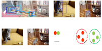
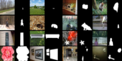
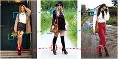
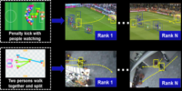
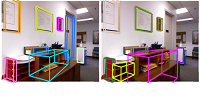
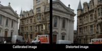
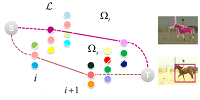
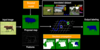

Exploring Weakly Labeled Images for Video Object Segmentation with Submodular Proposal Selection.
Yu Zhang, Xiaowu Chen, Jia Li, Wei Teng, Haokun Song.
IEEE Transactions on Image Processing, 2018. [Publisher's page]
Yu Zhang
Rethink, Refactor, and Research
About
I am currently a senior researcher with SenseTime Research, working on vision & learning problems for mobile applications. I received by PhD degree from VRLab, Beihang University, under the supervision of Prof. Qinping Zhao and Prof. Bin Zhou. I also work closely with Prof. Jia Li. During my PhD years, I was interested in developing principled algorithms to solve image/video understanding problems.
This is my detailed CV.
[2018-06-20] We have won the Best Paper Award of CGI 2018!
[2018-06-07] I have successfully defensed by thesis!
[2018-04-30] I will join SenseTime Research (Beijing) on July, 2018.
[2018-02-16] One paper on weakly supervised video object segmentation is accepted by IEEE TIP.
Publications



Semantic Object Segmentation in Tagged Videos via Detection.
Yu Zhang, Xiaowu Chen, Jia Li, Chen Wang, Changqun Xia.
IEEE Transactions on Pattern Analysis and Machine Intelligence, 2017. [Publisher's page]
Yu Zhang, Xiaowu Chen, Jia Li, Chen Wang, Changqun Xia.
IEEE Transactions on Pattern Analysis and Machine Intelligence, 2017. [Publisher's page]


High-level Representation Sketch for Video Event Retrieval.
Yu Zhang, Xiaowu Chen, Liang Lin, Changqun Xia.
SCIENCE CHINA Information Sciences, 2016.
[Publisher's page]
Yu Zhang, Xiaowu Chen, Liang Lin, Changqun Xia.
SCIENCE CHINA Information Sciences, 2016.
[Publisher's page]




Geodesic Propagation for Semantic Labeling.
Qing Li, Xiaowu Chen, Yafei Song, Yu Zhang.
IEEE Transactions on Image Processing, 2014.
[Publisher's page]
Qing Li, Xiaowu Chen, Yafei Song, Yu Zhang.
IEEE Transactions on Image Processing, 2014.
[Publisher's page]
Activities
- Reviewer for TIP, TMM and ACCV
- Intern at Baidu Research, March-June, 2018
Contact
Email: zhangyulb AT gmail DOT com.
You can also find me on Linkedin and Google Scholar.